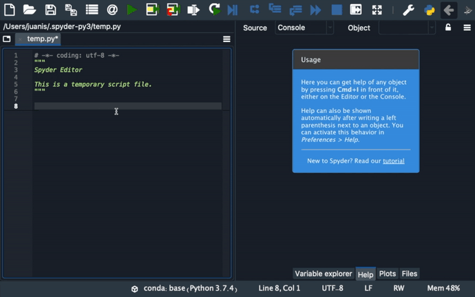

Help#
You can use the Help pane to find, render and display rich documentation for any object with a docstring, including modules, classes, functions and methods. This allows you to access documentation easily directly from Spyder, without having to interrupt your workflow.
You can also access Spyder’s tutorial from here, which will guide you through some basic steps for using its key features.

Getting help#
Help can be retrieved both by static analysis of open files in the Editor, or by dynamically inspecting an object in an IPython Console. You can trigger help manually by pressing the configurable help shortcut (Ctrl-I by default).

You can also manually enter the object’s name into the Object textbox at the top of the pane, if Console is selected as the Source.

Automatic help can be individually enabled for both the Editor and the Console under , and turned on and off dynamically via the lock icon in the top right corner of the Help pane.
If enabled, simply typing a left parenthesis (() after a function or method name will show its associated help.

Understanding help modes#
You can use the options menu (Hamburger icon) in the top right of the Help pane to toggle the help display mode.
Rich Text mode renders the object’s docstrings with Sphinx, Plain Text mode displays the docstring without formatting while Show Source displays the docstring inline with the code for the selected object, or any Python portion of it (if the object is not pure Python).
The latter can be useful when docstrings are not available or insufficient to document the object.

Getting help by hovering#
You can also get summary help for objects by hovering over them in the Editor. Clicking the hover popup will open the full documentation in the Help pane.

Control automatic import#
When you get help in the IPython Console for an object that has not been previously imported, it is automatically loaded in Spyder’s own internal interpreter so that documentation can be shown when available. This can be disabled in the Help pane’s top-right options menu so that only documentation from imported objects is displayed.